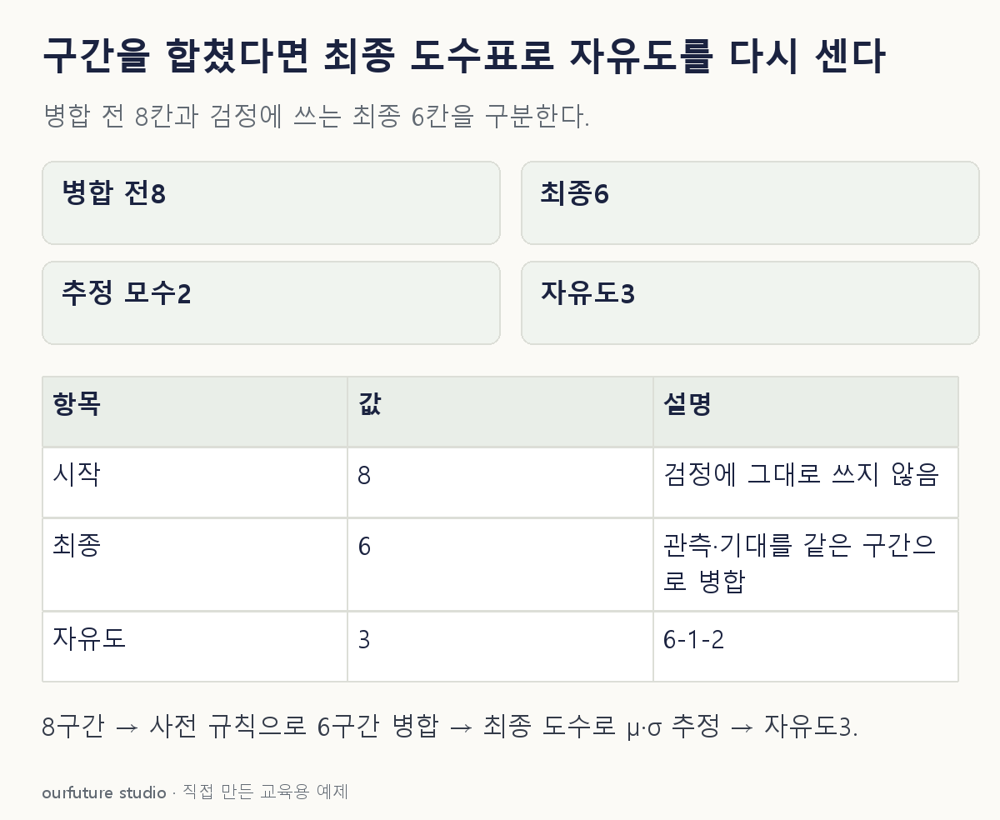

조건을 바꾸며 확인하기
사전 병합·정규적 구간도수 MLE·충분한 기대도수·독립 표본 가정 아래의 자유도 산술이다.
설명 그림과 비교하기
아래 그림과 표는 고정된 설명 예제입니다. 기본·변형 중 어떤 조건인지 캡션을 읽고, 바꾼 입력의 결과는 계산 칸에서 확인하세요.

같은 문제를 직접 골라 보기
독립 표본의 정규 적합도 검정에서 8개 구간을 규칙에 따라 6개 구간으로 합쳤다. 최종 도수의 다항 우도로 μ·σ를 정규적인 최대우도 추정하며 기대도수는 충분하다.
조건을 더 바꾸면?
최종 6구간은 유지하되 μ와 σ를 독립적인 외부 기준으로 모두 고정했다. 다른 근사 조건이 같다면 자유도는?
변형 풀이 확인
6−1=5다.
분포가 정규분포라는 이름만으로 모수 두 개를 빼지 않는다. 이번 검정 자료에서 추정한 모수는 없으므로 p=0이다.
처음 그린 칸 말고, 검정에 남은 칸을 센다.